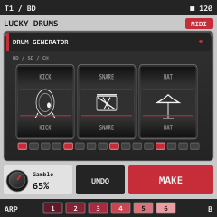
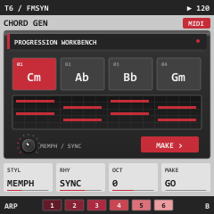

Hüllkurven und Filter formen

| ENV | AMP-Hüllkurve |
| SCL | FILTER / FILTER ENV |
| LFO | Modulation / SYNC |
| K1-K4 | Werte unter dem Display |
ATK, DEC, SUS und REL formen den Verlauf. ENV DEST wählt Ziel und Stärke der Hüllkurve; LFO wählt Welle, Ziel und Betrag. Die gezeichneten Kurven helfen beim Einordnen der Werte.
FM, Mono, Drums und 808

| OSC 1 / OSC 2 | Klangkern der Machine |
| MOD C / MOD D | FM-Modulatoren |
| TUNE | Detune / Pitch |
| COLOR / CRUSH | Klangfarbe |
Die sichtbaren Seiten passen zur gewählten Machine. FM SYN bietet Algorithmus und Operatoren, MONO Oszillatoren und Sub, 8BAS die 808-Hüllkurven. Vier Regler entsprechen stets den vier Karten.
Vier Generatoren mit Gamble

| K1 GAMBLE | Zufallsgrad 0-100 |
| K2 | frei |
| K3 UNDO | Vorheriges Ergebnis |
| K4 RECHTS | MAKE anfordern |
Lucky Drums / Ace Hats / Low Roller / Golden Chords.
STOP verwenden, MAKE wählen, mit OCT+ bestätigen. Jeder Generator zeigt seine eigene Animation. Geeignete Drum-, HiHat-, Bass- oder Synth-Spur wählen.
Scale, Chord und Arp

| SCALE | ROOT / SCL / QNT / GLD |
| CHORD | CHRD / VOIC / ROOT / SCL |
| ARP | ARP / MODE / RATE / FADE |
Grundton und Tonleiter zuerst festlegen. CHORD bestimmt Akkordtyp und Voicing. ARP bestimmt Spielrichtung und Teilung. Die ARP-Taste halten + SELECT erreicht alle Seiten bis Euclid.
Akkordfolgen und Varianten

| CHORD GEN K1 | STYL |
| K2 / K3 | RHY / OCT |
| K4 | MAKE |
CHORD GEN ist der Progression-Editor und bleibt getrennt von Golden Chords. CHORD VAR: K1 VAR, K2 LIVE, K3 UNDO, K4 MAKE. Die Gegenüberstellung SOURCE / VARIANT zeigt das Ergebnis.
Euclid als Rhythmus-Werkzeug

| K1 LEN | Länge |
| K2 HITS | Trefferzahl |
| K3 ROT | Rotation |
| K4 MAKE | Erzeugen |
Treffer werden über die gewählte Länge verteilt. Mit ROT verschiebst du den Startpunkt. Ring und Step-Leiste zeigen die Verteilung. Die Bedienung bleibt innerhalb der gemeinsamen Generator-Familie.